9.1 Long term
9.1.1 Goal
Decompose a long term time series of ten years monthly data:

Figure 9.2: Decomposition of long time series over 10 Years
9.1.2 Data Basis
Figure 9.3: Raw Data for Decomposition Plot Long Term
9.1.3 Solution
Create a new script, copy/paste the following code and run it:
library(dplyr)
library(lubridate)
library(plotly)
library(ggplot2)
library(forecast)
# load csv file
df <- read.csv2("https://github.com/hslu-ige-laes/edar/raw/master/sampleData/flatHeatAndHotWater.csv",
stringsAsFactors=FALSE)
# filter flat
df <- df %>% select(timestamp, Adr02_energyHeat)
colnames(df) <- c("Time", "meterValue")
df$Time <- parse_date_time(df$Time,
orders = "YmdHMS",
tz = "Europe/Zurich")
# calculate consumption value per month
# pay attention, the value of 2010-02-01 00:00:00 represents the meter reading on february first,
# so the consumption for february first is value(march) - value(february)!
df <- df %>% mutate(value = lead(meterValue) - meterValue)
# remove counter value column
df <- df %>% select(-meterValue) %>% na.omit()
df[1,2] <- 600
df.ts <- ts(df %>% select(value) %>% na.omit(), frequency = 12, start = min(year(df$Time)))
df.decompose <- df.ts[,1] %>%
stl(s.window = 7)
df.decompose <- df.decompose$time.series
df.decompose <- as.data.frame(df.decompose)
df.decompose <- cbind(df, df.decompose)
data <- as.data.frame(tidyr::pivot_longer(df.decompose,
cols = -Time,
names_to = "Component",
values_to = "Value",
values_drop_na = TRUE)
)
data$component <- as.factor(data$Component)
data$component <- factor(data$Component, c("value",
"trend",
"seasonal",
"remainder"))
data$Value <- round(data$Value, digits = 1)
plot <- ggplot(data) +
geom_path(aes(x = Time,
y = Value
),
color = "black",
alpha = 0.7) +
facet_wrap(~component, ncol = 1, scales = "free_y") +
scale_x_datetime(date_breaks = "years" , date_labels = "%Y") +
theme_minimal() +
theme(panel.spacing = unit(1, "lines"),
legend.position = "none") +
labs(x = "") +
ggtitle("Time Series Decomposition over 10 Years")
ggplotly(plot)9.1.4 Discussion
Energy optimization in mid-2017 is clearly visible in the trend and also in the magnitude of the seasonal pattern
And as well in the remainder the too low setting of January 2018 where the thermostat of the flat got deactivated
The trend shows as well an higher consumption in June 2013